-
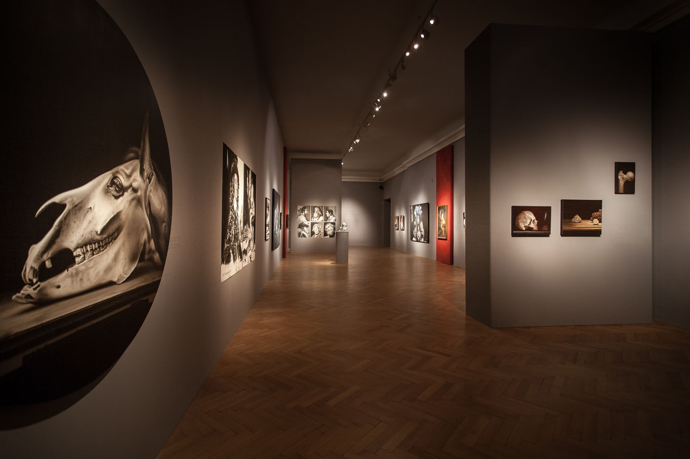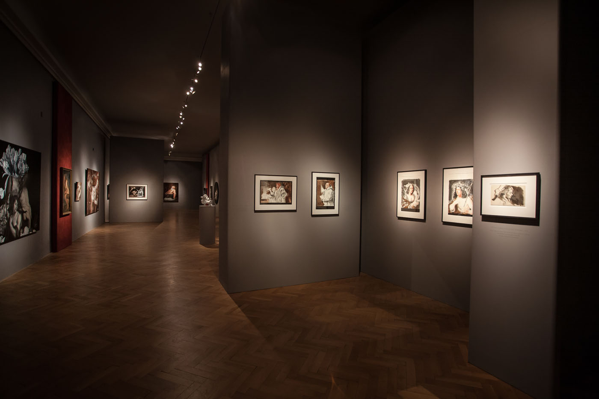

 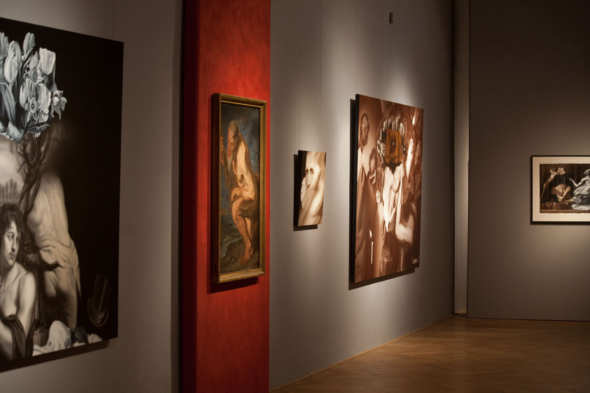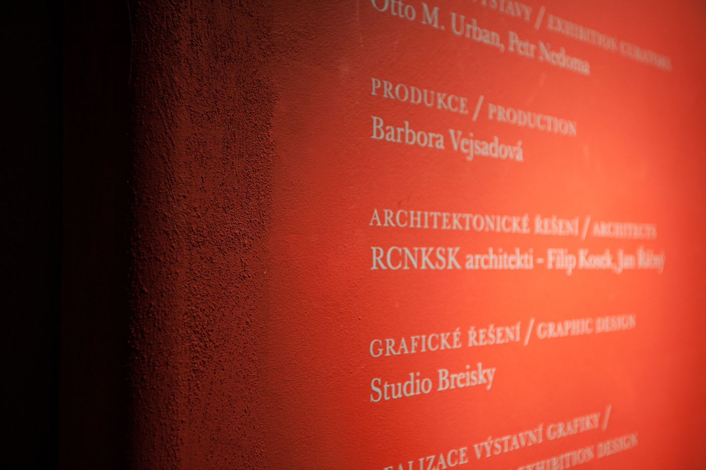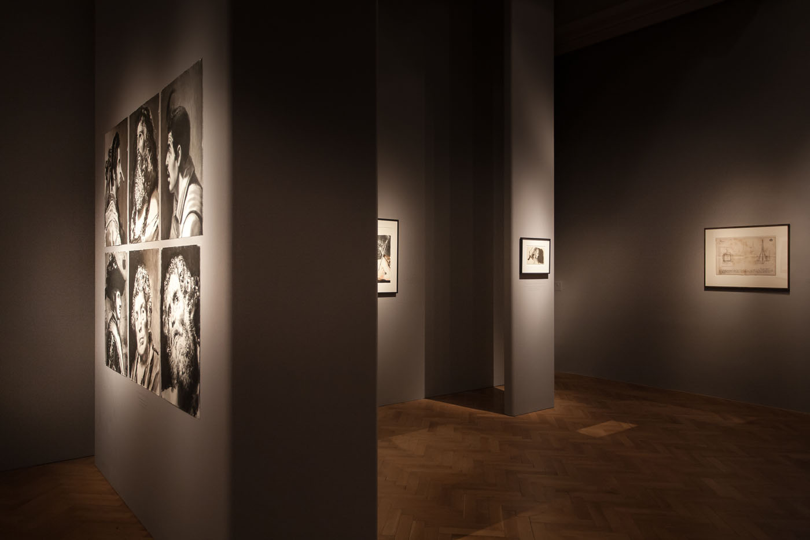
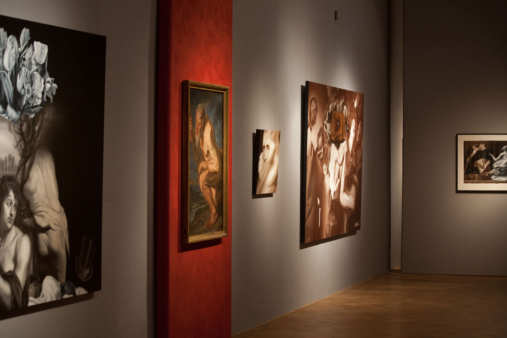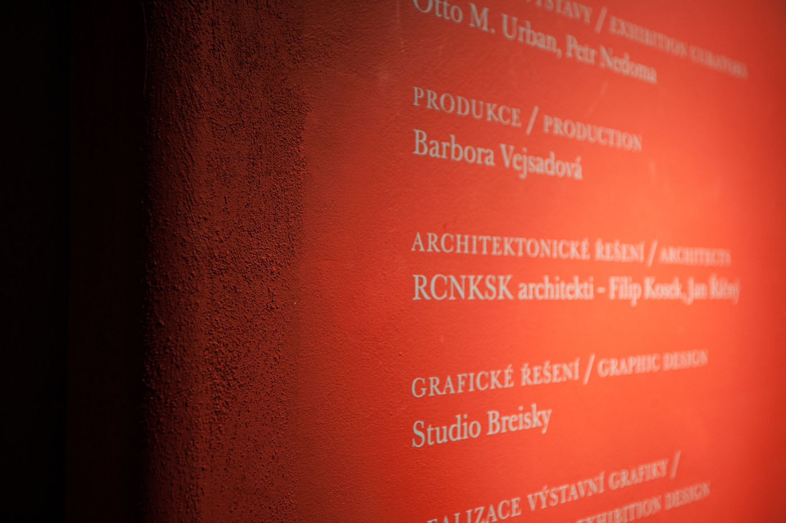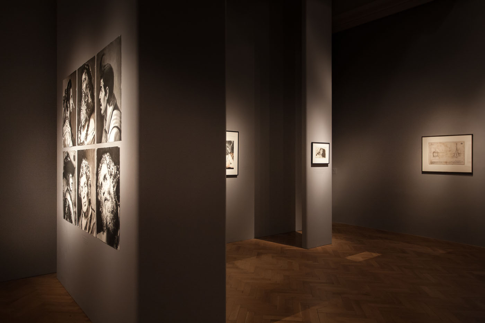
-


 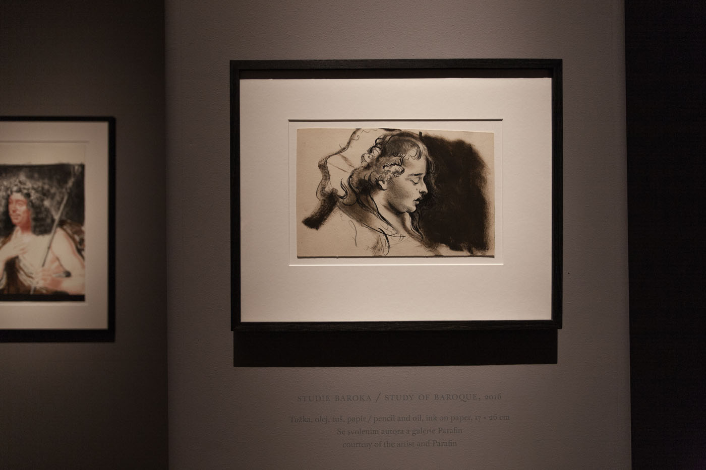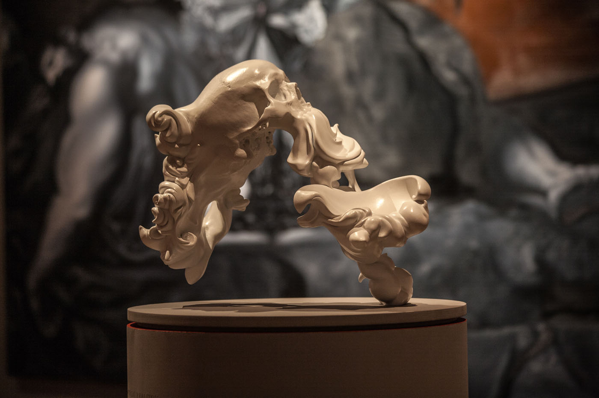
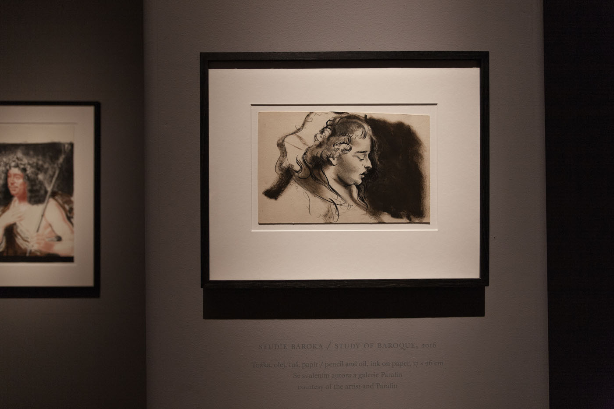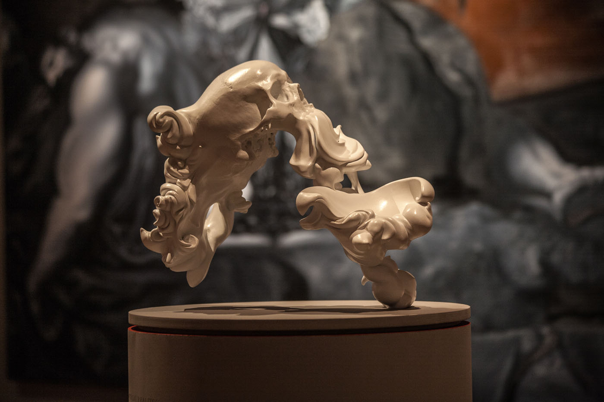

Hynek Martinec: Cesta na Island
Datum konání : 27. 4. 2018 - 16. 9. 2018
Místo konání: Šternberský palác
Soubor obrazů Hynka Martince je ilustrací konceptuálně formulované hříčky, založené na fiktivní historce o pokusu postavit v první polovině 18. století na Islandu barokní katedrálu a vyzdobit ji obrazy. K. I. Dientzenhofer katedrálu nakonec nepostavil, ale údajně zachovaný soubor obrazů určený pro Island je předmětem této výstavy. Přibližně třicet obrazů a kreseb je tematicky svázáno s mnoha konkrétními díly barokní sbírky Národní galerie v Praze. Martincovy reinterpretace a parafráze v mnohých ohledech vedou k novému čtení původních předloh a zároveň otevírají řadu otázek uvažování o pozicích současné malby a úloze kontextu.
V roce 1729 byl Island zmítán násilím a chudobou. Právě tehdy pozval učenec a sběratel rukopisů Árni Magnússon (1663‒1730) renomovaného architekta Kiliána Ignáce Dientzenhofera (1689‒1751), aby na ledovém ostrově postavil katedrálu. Po dokončení kláštera v Broumově a žel také po smrti Árniho Magnúsona nakonec Dientzenhofer podnikl roku 1733 dobrodružnou cestu na Island, aby tam našel vhodné místo pro stavbu. Po příjezdu jej místní přijali s nadšením. Zemi procestoval křížem krážem, přesto potřebné vhodné místo nenašel.
Vrátil se zpět do Evropy, aby pokračoval v jiných svých projektech. Z té doby se naštěstí dochoval stavební plán zamýšlené katedrály a několik barokních obrazů, které byly určeny k její výzdobě. Je vzrušující, že dnes Národní galerie představuje část ambiciózního projektu, který bohužel vinou nepříznivých podmínek nikdy nebyl zrealizován. Island tím navždy přišel o baroko. (Hynek Martinec, Lost in Time)
Výstava Hynka Martince oslavuje přátelství současného umění se starými mistry. Tři desítky současných maleb Hynka Martince hostí od 27. dubna do 26. srpna sbírka starého umění Národní galerie v Praze ve Šternberském paláci. Martinec ve svých dílech reaguje na díla velikánů starého umění. Jeho aktuální výstava vychází ze smyšlené historky o pokusu Kiliána Ignáce Dietzenhofera postavit na Islandu barokní katedrály.Výstavu pořádá Národní galerie ve spolupráci s Galerií Rudolfinum.
„Soubor obrazů Hynka Martince je ilustrací fiktivního příběhu o snaze postavit v 18. století na Islandu barokní katedrálu. K její stavbě sice nikdy nedošlo, ale Národní galerie nyní vystavuje soubor obrazů určený pro její výzdobu,“ popisuje tajemný příběh výstavy kurátor Národní galerie v Praze Otto M. Urban.
Rembrandtova kyčel
Obrazy a kresby jsou tematicky svázány s konkrétními díly sbírky Národní galerie v Praze. Podle Hynka Martinec je totiž umění kontinuálním dialogem všech umělců. Martinec vytváří volné série, které reinterpretují velké postavy starého i moderního umění od Dürera, přes Schieleho až po Duchampa.
„Jména umělců si vybírám podle nálady nebo podle výstav, které mě zasáhly. Především je ale v něčem obdivuji a má tvorba je snahou odbourat hranice času, a propojit se tak s umělci, které mám rád a rád bych se s nimi osobně setkal,“ uvádí Hynek Martinec.„Hynek Martinec zvolil komprimovanou formu, kompozici sestavenou z výseků evokujícíchsilné momenty barokních předloh. Jeho obrazy nejsou pouhým jevištěm pro exhibici malířské dovednosti. Jsou krokem směrem do historie k již existujícím vrcholům, které se zdají vlivem zduchovnění v čase nepřekonatelné, ale přesto v sobě obsahují potenciál dalšího rozvíjení,“ vysvětluje Petr Nedoma, ředitel Galerie Rudolfinum a kurátor výstavy.Ve Šternberském paláci je k vidění třeba malba Rembrandtova kyčel, Bičování barokního koně nebo Cirkus nočních můr. Podle Martince dnešní doba inspiruje ve své svobodě a možnosti propojovat všechno možné, včetně toho, co již bylo vytvořeno jinými umělci. Umělec podle něho přetváří minulost do nového jazyka, určeného dalším generacím.„Přišlo mi přirozené věnovat se právě baroku a pokusit se vytvořit most mezi barokním uměním a dnešní dobou. Vždy jsem snil o tom, abych mohl jednou vystavovat a konfrontovat své práce s umělci, jako jsou Peter Paul Rubens, Anthonis van Dyck nebo Rembrandt a spousta dalších, které obdivuji. Byla to právě umělecká kolekce Národní galerie, kde jsem jako student objevoval odkaz barokního umění. Vrátit se do Šternberského paláce po několika letech s vlastní výstavou je pro mě něco neskutečného,“ dodává Hynek Martinec.
Život malby
Hynek Martinec (1980) se narodil v Broumově, v současnosti žije a tvoří v Londýně. S malířskou virtuozitou se ve své tvorbě zmocňuje děl velkých mistrů od konce 16. do 19. století, aby kombinací jednotlivých motivů, převzatých detailů a celých kompozic vytvářel svět vlastních obrazů. Od dětství byl fascinován kresbou a ani dnes si nedokáže bez kreslení představit prakticky žádný den. Od počátku své tvorby měl ctižádost dosáhnout na stálice výtvarného umění – van Gogha nebo Leonarda. Kresby a obrazy starých mistrů studoval v Národní galerii v Praze, Britském muzeu nebo Národní galerii v Londýně. Martincova tvorba otevírá otázky o pozici současné malby a potvrzuje její pevné místo ve vizuální kultuře. Jeho dílo naopak jasně popírá v posledních desetiletích mnohokrát diskutovaný zánik malby a dominanci ryze konceptuálního umění. Na samostatných i skupinových výstavách vystavoval Martinec v Praze, Londýně, Paříži nebo New Yorku.
Kurátoři: Otto M. Urban, Petr NedomaVýstavu pořádá Národní galerie v Praze ve spolupráci s Galerií Rudolfinum.
Web výstavy: Link na ngprague.cz
Video k výstavě: https://www.youtube.com/watch?v=RiPhTHUw2Bo
Recenze:
Magdalena Čechlovská, Aktuálně
| Klient | Národní galerie Praha |
| Lokace | Praha 1 – Hradčany, Česká republika |
| Typologie | výstava |
| Typ | dočasná instalace |
| Rok | 2018 |
| Status | realizováno |
| Náklady | 490 000 Kč |
| Autoři | MgA. Filip Kosek, MgA. Jan Říčný |
| Spolupráce | kurátor: Otto M. Urban Ph.D., Petr Nedoma grafický design: Studio Breisky výroba: Kamark s.r.o. osvětlení: RCNKSK |